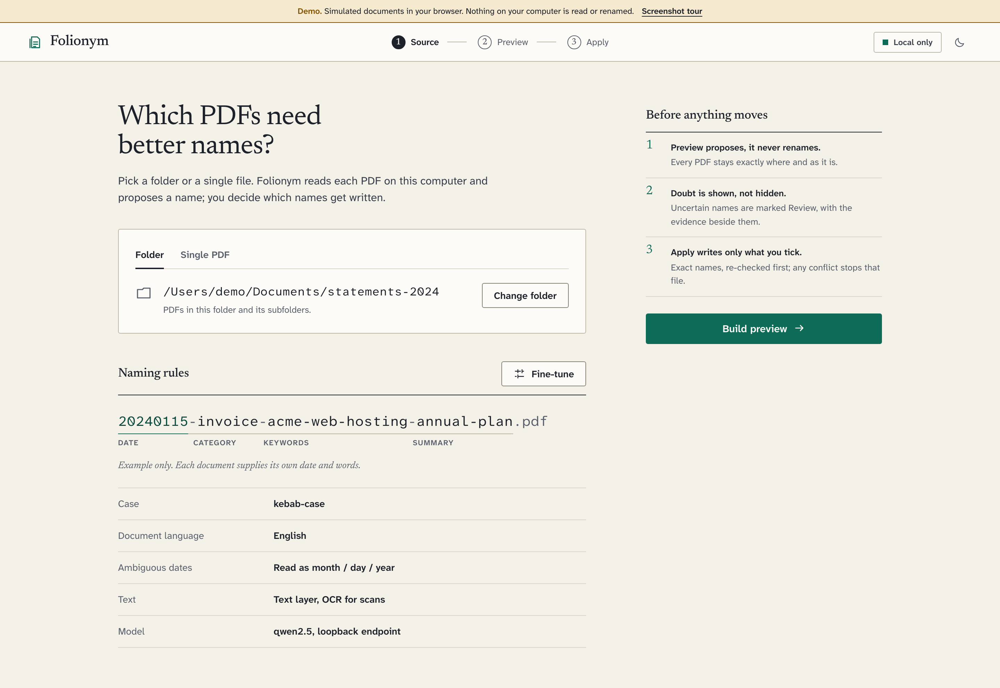
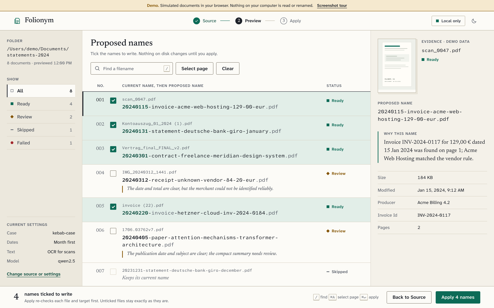
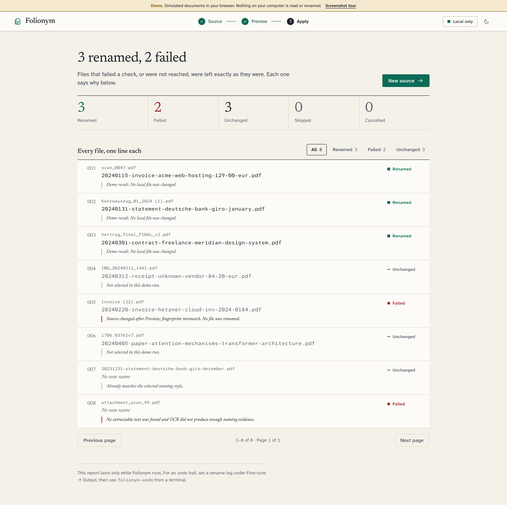
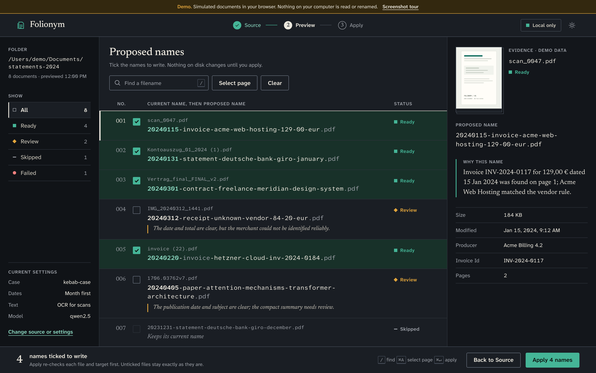

Screenshot tour
Folionym reads a PDF's text and metadata, proposes a useful filename with deterministic rules and optional local-LLM help, and shows you the result before anything on disk changes. Every screen below is the real browser interface running on simulated documents.
-
1
Source
Pick a folder or a single PDF. The naming rules show an example filename taken apart into its fields; extraction, model, and output options sit behind Fine-tune.

-
2
Preview
Every document becomes a numbered entry: its current name above its proposed name, with the reason beside anything marked Review. Preview builds an immutable plan and renames nothing.

-
3
Apply
Apply writes only the ticked, exact names after re-checking each file and target, then reports every file and why it did or did not change.

-
4
Dark theme
A light and a dark theme are both included and follow your system setting until you choose one.
